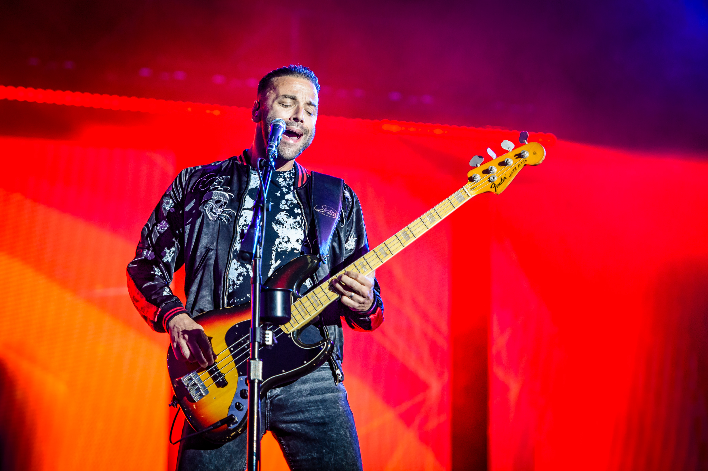

Matthew Bellamy

Sänger, Gitarrist und Pianist
Geboren: 9. Juni 1978 in Cambridge, England.
Angefangen mit 6 Klavier zu spielen und mit 11 Gitarre zu spielen.
Mit 10 Jahren zog seine Familie nach Devon, Teignmouth.
Fun-Facts:
Er kann sich selber kitzeln.
Er ist nur 173 cm gross.
Er kann das Alphabet rückwärts sagen.
Hat einen Weltrekord mit den meist zerstörten Gitarren in einer Tour.
Dominic Howard

Schlagzeuger
Geboren: 7. Dezember 1977 in Stockport, England.
Früh angefangen Schlagzeug zu spielen.
Mit 8 Jahren zog seine Familie nach Devon, Teignmouth.
Fun-Facts:
Er ist Linkshänder.
Sein Lieblingsauto ist der 1981 DeLorean DMC-12 von "Zurück in die Zukunft".
Er ist ein Fan von Spiderman.
Bei vier Songs, macht er Hintergrund Gesänge obwohl er nicht gerne singt.
Christopher Wolstenholme

Bassist
Geboren: 2. Dezember 1977 in Yorkshire, England
War zuerst Schlagzeuger, hat erst später angefangen Bass zu spielen.
Mit 11 Jahren zog seine Familie nach Devon, Teignmouth.
Fun-Facts:
Er ist ein grosser Fussballfan.
Sein Lieblingsspiel ist "The Legend of Zelda: Ocarina of Time".
Bei Auftritten "Headbanged" er sehr viel.
Hat eine Gitarren Kollektion mit über 130 Gitarren.